Next: Clusters Merging and System Up: Speaker Clusters and Models Previous: Speaker Clusters and Models Contents
In order to train the speaker models used throughout the
processing a standard EM-ML algorithm was used by the broadcast
news system. It performed a five iterations EM-ML algorithm
regardless of the data or the models being trained. The use of EM
in small training datasets has two potential problems. On one hand
the models can suffer from overfitting to the available data,
becoming not general enough to represent the speaker at hand. On
the other hand there is no guarantee that the models will converge
to the best possible parameters that maximize the likelihood of
the data given such model. The use of 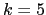 iteration of EM
training is a parameter that needs to be defined for the system in
order to avoid overfitting but to allow the models to be correctly
trained to the data. It was seen that modifying the value of the
parameter  would considerably alter the final performance, and
therefore it was found desirable to find a more robust algorithm.
would considerably alter the final performance, and
therefore it was found desirable to find a more robust algorithm.
For these reasons a new training algorithm has been implemented. The choice of implementation has been the cross-validation EM training algorithm (CV-EM for short), recently proposed by T. Shinozaki in Shinozaki and Ostendorf (2007). It introduces a cross-validation technique, in use for decision tree design, to the iterative process of the EM, addressing the problems of overfitting and potential local maxima.
Figure 3.8 shows the CV-EM procedure. The system starts from an initial single model to be trained and finishes also with a single model. On the initial E-step of the EM processing the training data is split into N partitions as homogeneously as possible (in the implementation each consecutive frame is assigned to a different partition sequentially until all frames have been assigned). Then the conditional probability of each frame to each Gaussian mixture in the initial model is computed. This process is identical to the initial E-step in a similar technique called parallel EM training (Young et al., 2005).
In the following M-step, each model  is reestimated using
the sufficient statistics computed for all partitions except for
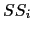, which is kept as cross-validation data. This differs
from the parallel EM technique, which collapses all the statistics
into creating a single model, losing the cross-validation
properties. In the CV-EM algorithm, once all the N models have
been approximated, new conditional probabilities are computed for
the frames in each partition using model
is reestimated using
the sufficient statistics computed for all partitions except for
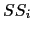, which is kept as cross-validation data. This differs
from the parallel EM technique, which collapses all the statistics
into creating a single model, losing the cross-validation
properties. In the CV-EM algorithm, once all the N models have
been approximated, new conditional probabilities are computed for
the frames in each partition using model  . As data
in partition has not been involved in the reestimation of
the parameters in
. As data
in partition has not been involved in the reestimation of
the parameters in  , the accumulated likelihood from all
partitions can be used as a cross-validation to check for
convergence, avoiding the possible overfitting to the data. In the
implementation a
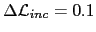% likelihood
increase criterion is used.
, the accumulated likelihood from all
partitions can be used as a cross-validation to check for
convergence, avoiding the possible overfitting to the data. In the
implementation a
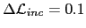% likelihood
increase criterion is used.
In Shinozaki and Ostendorf (2007) it proposes a 5 iterations step when training models towards speech recognition, although in speaker diarization a likelihood relative increase stopping criterion is preferred in order to bound the likelihood variation between iterations.
Given two clusters 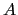 and 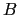, with data 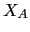 and 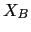 and
their respective models, 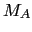 and 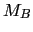, when training such
models let us consider the variation in likelihood between two EM
iterations as
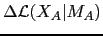 and
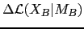. Within the diarization system we want
to use the  BIC metric to determine wether they belong to
the same speaker or not. By using the modified
BIC metric to determine wether they belong to
the same speaker or not. By using the modified  BIC
constrained by 3.2, and expanding terms, we
obtain:
BIC
constrained by 3.2, and expanding terms, we
obtain:
In the usual proceeding of the algorithm, by comparing
the resulting  BIC value to a threshold 0 it will be
determined wether both clusters are the same speaker or not. If
each of the models is trained an extra EM iteration, and using the
notation introduced before, one can express the resulting
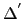BIC in terms of the one just computed in equation
3.3 as
BIC value to a threshold 0 it will be
determined wether both clusters are the same speaker or not. If
each of the models is trained an extra EM iteration, and using the
notation introduced before, one can express the resulting
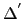BIC in terms of the one just computed in equation
3.3 as
| 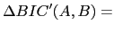 | 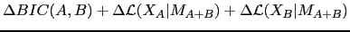 | ||
| 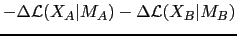 | (3.4) |
In order for the system to be robust and results consistent it is desired that 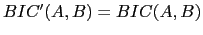 which leads to having the likelihood variation terms to cancel out. While it is not possible to control the exact likelihood variations between iterations, by using a minimum relative likelihood variation as a stopping criterion for the CV-EM training makes these terms upper bounded and the BIC more stable. Furthermore, by forcing these variations to be small will result in 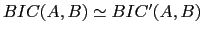 as desired.
According to Shinozaki and Ostendorf (2007), since N cross-validation models are reestimated from different subsets of the data it could potentially create a problem where the Gaussian mixtures would behave differently to the data and obtain totally different parallel models, in which case the CV-EM algorithm would not be usable. In reality the difference in number of samples between any two models is 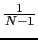, which becomes very small when N is large, and therefore prevents this divergence from happening.
Once the CV-training stopping criterion is reached, the current sufficient statistics computed for each of the subsets are used to derive a single output model. The increase in computation for this parallel training technique is small as only in the M-step the number of operations is increased. When the size of the training data is big, the most costly part of the EM algorithm is the E-step, which takes the same time to be computed as by the CV-EM algorithm.
In order to avoid quick changes in the speaker turns in both the baseline and the current system, a minimum duration of 3 seconds is imposed when performing Viterbi segmentation of the data. This is imposed in the speaker model by using multiple consecutive states with transition probability 1 between them, and tied Gaussian mixture models, as seen in figure 3.2.
On the contrary, it was observed that the maximum turn duration
for the speaker turn is artificially constrained by the  and parameters in figure 3.2. As explained
in detail in section 4.2.3 these were changed to
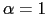 and 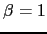 to allow the maximum duration to be
solely decided by the acoustics. This is an important change given
that conference room data is very different in terms of average
speaker turn length to broadcast news and to lecture room data.
and parameters in figure 3.2. As explained
in detail in section 4.2.3 these were changed to
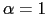 and 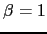 to allow the maximum duration to be
solely decided by the acoustics. This is an important change given
that conference room data is very different in terms of average
speaker turn length to broadcast news and to lecture room data.
As mentioned earlier, when processing multiple microphones the
system creates an independent feature stream to the acoustic
stream composed of the TDOA values between microphones. As
explained in section 5.3, each one of the feature
streams is represented by different models and the total
likelihood of the data at any instant is obtained as the weighted
sum of the log-likelihood of the respective feature vectors
according to their models. The resulting log-likelihood affects
the decisions made in the Viterbi segmentation module and in the
 BIC computation between two clusters, which otherwise are
identical to the broadcast news system.
BIC computation between two clusters, which otherwise are
identical to the broadcast news system.
In order for the different independent feature streams to be
combined at the log-likelihood level a relative weight has to be
assigned for each one depending on their reliability to contribute
to the diarization. Although an initial weight is set for all
meetings using development data, each particular meeting will
respond differently to the use of the TDOA values and therefore an
automatic system of reestimating these initial weights is
desirable. An effective way was found using a metric derived from
the  BIC values computed between all pairs for all feature
streams. It is described in section 5.3.2.
BIC values computed between all pairs for all feature
streams. It is described in section 5.3.2.